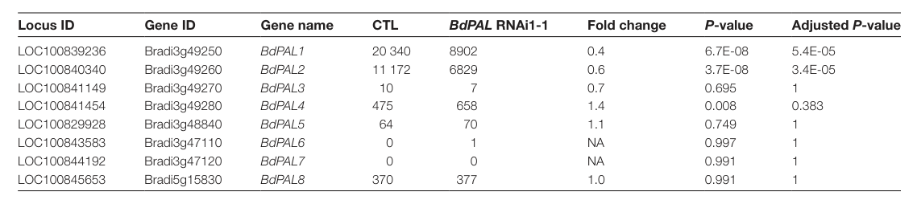

LOC100829928/Bradi3g48840v3 encodes BdPAL5, a Brachypodium distachyon phenylalanine ammonia-lyase family enzyme. It is predicted to convert L-phenylalanine to trans-cinnamate, feeding phenylpropanoid metabolism, and published expression data support jasmonate-responsive regulation.
| GO Term | Evidence | Action | Reason |
|---|---|---|---|
|
GO:0003824
catalytic activity
|
IEA
GO_REF:0000002 |
MARK AS OVER ANNOTATED |
Summary: MARK_AS_OVER_ANNOTATED. Correct but too general; phenylalanine ammonia-lyase activity is already present and more informative.
Reason: The protein is not merely a generic catalyst: UniProt assigns EC 4.3.1.24, the InterPro signatures include a phenylalanine ammonia-lyase-specific family, and the review already contains the specific GO:0045548 molecular function.
Supporting Evidence:
file:BRADI/LOC100829928/LOC100829928-uniprot.txt
RecName: Full=Phenylalanine ammonia-lyase; EC=4.3.1.24.
file:BRADI/LOC100829928/LOC100829928-uniprot.txt
InterPro; IPR005922; Phe_NH3-lyase.
|
|
GO:0005737
cytoplasm
|
IEA
GO_REF:0000120 |
ACCEPT |
Summary: ACCEPT. The UniProt record includes cytoplasmic localization.
Reason: Cytoplasmic localization is consistent with the UniProt subcellular location statement and with soluble PAL-family enzymes that initiate phenylpropanoid metabolism. The Falcon report did not find BdPAL5-specific localization imaging, but Brachypodium PAL/PTAL activity is mainly cytosolic and phenylpropanoid entry enzymes act upstream of ER-anchored downstream steps.
Supporting Evidence:
file:BRADI/LOC100829928/LOC100829928-uniprot.txt
SUBCELLULAR LOCATION: Cytoplasm.
file:BRADI/LOC100829928/LOC100829928-deep-research-falcon.md
No BdPAL5-specific localization experiment was recovered; related Brachypodium PAL/PTAL evidence supports a mainly cytosolic enzyme near ER-associated phenylpropanoid metabolism.
|
|
GO:0006559
L-phenylalanine catabolic process
|
IEA
GO_REF:0000002 |
KEEP AS NON CORE |
Summary: KEEP_AS_NON_CORE. Phenylalanine is consumed by the enzyme, but the core biological context is trans-cinnamate and phenylpropanoid biosynthesis.
Reason: The catalytic reaction deaminates L-phenylalanine, so the catabolic process term is mechanistically true. It is less central than the product pathway terms because this enzyme is best understood as the entry step to trans-cinnamate and phenylpropanoid biosynthesis.
Supporting Evidence:
file:BRADI/LOC100829928/LOC100829928-uniprot.txt
L-phenylalanine = (E)-cinnamate + NH4(+).
|
|
GO:0009699
phenylpropanoid biosynthetic process
|
IEA
GO_REF:0000117 |
ACCEPT |
Summary: ACCEPT. PAL catalyzes the entry step into phenylpropanoid biosynthesis.
Reason: Phenylalanine ammonia-lyase is the canonical entry enzyme into the phenylpropanoid pathway, and UniProt maps this protein to trans-cinnamate biosynthesis from L-phenylalanine. Falcon found Brachypodium literature mapping Bradi3g48840/LOC100829928 to BdPAL5 and showing jasmonate-responsive induction, but not purified BdPAL5 kinetics.
Supporting Evidence:
file:BRADI/LOC100829928/LOC100829928-uniprot.txt
PATHWAY: Phenylpropanoid metabolism; trans-cinnamate biosynthesis; (E)-cinnamate from L-phenylalanine.
file:BRADI/LOC100829928/LOC100829928-deep-research-falcon.md
Cass et al. list Bradi3g48840/LOC100829928 as BdPAL5 among eight Brachypodium PAL genes; Kouzai et al. report strong jasmonate induction, consistent with inducible phenylpropanoid entry capacity.
|
|
GO:0016841
ammonia-lyase activity
|
IEA
GO_REF:0000002 |
KEEP AS NON CORE |
Summary: KEEP_AS_NON_CORE. Correct parent activity, but phenylalanine ammonia-lyase activity is the specific function.
Reason: Ammonia-lyase activity is a valid parent for PAL/HAL-family enzymes, but the InterPro Phe_NH3-lyase signature and EC 4.3.1.24 support the more precise phenylalanine ammonia-lyase activity term.
Supporting Evidence:
file:BRADI/LOC100829928/LOC100829928-uniprot.txt
SIMILARITY: Belongs to the PAL/histidase family.
file:BRADI/LOC100829928/LOC100829928-uniprot.txt
InterPro; IPR005922; Phe_NH3-lyase.
|
|
GO:0045548
phenylalanine ammonia-lyase activity
|
IEA
GO_REF:0000120 |
ACCEPT |
Summary: ACCEPT. This is the specific molecular function supported by EC 4.3.1.24.
Reason: This is the best molecular-function annotation for the protein. Although the PANTHER root is the broader histidine-ammonia-lyase family, the UniProt enzyme assignment, reaction, and phenylalanine ammonia-lyase-specific InterPro signature all point to PAL rather than a different aromatic ammonia-lyase paralog. Falcon research further notes that BdPTAL1 is the Brachypodium PAL-family enzyme with strong bifunctional PAL/TAL support, so BdPAL5 should be treated conservatively as PAL unless BdPAL5-specific substrate data emerge.
Supporting Evidence:
file:BRADI/LOC100829928/LOC100829928-uniprot.txt
RecName: Full=Phenylalanine ammonia-lyase; EC=4.3.1.24.
file:BRADI/LOC100829928/LOC100829928-uniprot.txt
L-phenylalanine = (E)-cinnamate + NH4(+).
file:BRADI/LOC100829928/LOC100829928-deep-research-falcon.md
The report maps LOC100829928/Bradi3g48840 to BdPAL5; it found direct family/expression support but no purified BdPAL5 kinetic comparison of L-phenylalanine versus L-tyrosine.
|
|
GO:0009800
cinnamic acid biosynthetic process
|
IEA
GO_REF:0000041 |
ACCEPT |
Summary: ACCEPT. UniPathway correctly captures the product-side pathway context: phenylalanine ammonia-lyase produces trans-cinnamate from L-phenylalanine.
Reason: This is direct pathway context for the enzyme activity. The product of the PAL reaction is trans-cinnamate, so cinnamic acid biosynthesis is not a distant downstream inference.
Supporting Evidence:
file:BRADI/LOC100829928/LOC100829928-uniprot.txt
PATHWAY: Phenylpropanoid metabolism; trans-cinnamate biosynthesis; (E)-cinnamate from L-phenylalanine.
|
The research report should be a detailed narrative explaining the function, biological processes, and localization of the gene product. Citations should be given for all claims.
You should prioritize authoritative reviews and primary scientific literature when conducting research. You can supplement
this with annotations you find in gene/protein databases, but these can be outdated or inaccurate.
We are specifically interested in the primary function of the gene - for enzymes, what reaction is catalyzed, and what is the substrate specificity? For transporters, what is the substrate? For structural proteins or adapters, what is the broader structural role? For signaling molecules, what is the role in the pathway.
We are interested in where in or outside the cell the gene product carries out its function.
We are also interested in the signaling or biochemical pathways in which the gene functions. We are less interested in broad pleiotropic effects, except where these elucidate the precise role.
Include evidence where possible. We are interested in both experimental evidence as well as inference from structure, evolution, or bioinformatic analysis. Precise studies should be prioritized over high-throughput, where available.
LOC100829928 (Bradi3g48840v3; UniProt I1IBL7) encodes a phenylalanine ammonia-lyase (PAL)-family aromatic ammonia-lyase in Brachypodium distachyon (purple false brome). In the Brachypodium genome, Bradi3g48840 is one of eight PAL-family loci and is referred to as BdPAL5 in a primary functional study of PAL knockdown (Cass et al., 2015, J. Exp. Bot., 2015-06; https://doi.org/10.1093/jxb/erv269) (cass2015effectsofphenylalanine pages 4-4, cass2015effectsofphenylalanine media 0e2f129d). While BdPAL5 itself has not been individually biochemically characterized in the retrieved sources, its family/domain context and the Brachypodium PAL-pathway literature strongly support its annotation as a cytosolic PAL catalyzing L-phenylalanine → trans-cinnamate + NH3, feeding phenylpropanoid metabolism (lignin and hydroxycinnamate formation) (cass2015effectsofphenylalanine pages 2-3, barros2016roleofbifunctional pages 1-2). In Brachypodium, a distinct PAL-family member (BdPTAL1) is bifunctional (PAL/TAL) and supplies a major tyrosine-derived entry route to lignin, illustrating grass-specific dual entry into lignification (barros2016roleofbifunctional pages 1-2, barros2016roleofbifunctional pages 2-3, yokoyama2024evolutionofaromatic pages 8-9).
Cass et al. explicitly lists Bradi3g48840 (LOC100829928) among eight Brachypodium distachyon PAL genes and links it to BdPAL5 (Cass et al., 2015; publication date 2015-06) (cass2015effectsofphenylalanine pages 4-4, cass2015effectsofphenylalanine media 0e2f129d). This satisfies the requirement that the gene symbol and locus correspond to the PAL-family enzyme in the correct organism.
All eight Brachypodium PAL-family genes (including Bradi3g48840) carry the conserved Ala-Ser-Gly motif required to form the autocatalytic 4-methylidene-imidazole-5-one (MIO) electrophilic prosthetic group characteristic of aromatic ammonia-lyases (cass2015effectsofphenylalanine pages 4-4, wu2025phenylalanineammonialyasea pages 2-4). This is consistent with the UniProt description of an Aromatic_Lyase-domain enzyme in the PAL/histidase family.
PAL is the entry enzyme of phenylpropanoid metabolism, catalyzing the non-oxidative deamination of L-phenylalanine (L-Phe) to trans-cinnamic acid (t-cinnamate) and ammonia, committing carbon flux from aromatic amino acid metabolism into phenylpropanoid products (including lignin) (Cass et al., 2015; Barros et al., 2016; Wu et al., 2025) (cass2015effectsofphenylalanine pages 2-3, barros2016roleofbifunctional pages 1-2, wu2025phenylalanineammonialyasea pages 2-4). In grasses, an additional route exists via tyrosine ammonia-lyase (TAL) activity, where L-tyrosine (L-Tyr) can be deaminated directly to p-coumarate (4-coumaric acid), bypassing the PAL→C4H step (barros2016roleofbifunctional pages 1-2).
PALs are often phenylalanine-preferred enzymes, whereas TALs act on tyrosine; grasses can possess bifunctional phenylalanine/tyrosine ammonia-lyases (PTALs) that catalyze both reactions in a single enzyme and can contribute substantially to lignification (barros2016roleofbifunctional pages 1-2, yokoyama2024evolutionofaromatic pages 8-9). In Brachypodium, BdPTAL1 is the single PAL-family member identified as bifunctional (PAL/TAL), while other members are considered monofunctional PALs in that study’s framework (barros2016roleofbifunctional pages 2-3, barros2016roleofbifunctional pages 1-2).
A defining mechanistic feature of PAL-family enzymes is the MIO prosthetic group, which forms autocatalytically from an internal Ala-Ser-Gly tripeptide and supports the ammonia-lyase elimination chemistry; plant PAL is typically homotetrameric (wu2025phenylalanineammonialyasea pages 2-4). In Brachypodium, native BdPTAL1 was observed as a tetramer (~290 kDa native complex, ~77 kDa subunits) (Barros et al., 2016; publication date 2016-05; https://doi.org/10.1038/nplants.2016.50) (barros2016roleofbifunctional pages 2-3).
While specific experimental subcellular localization for BdPAL5 is not reported in the retrieved sources, Brachypodium PTAL activity is largely cytosolic with only minor plastid/microsomal presence (barros2016roleofbifunctional pages 2-3). More broadly, phenylpropanoid metabolism is increasingly understood as spatially organized at the cytosolic face of the endoplasmic reticulum (ER), anchored by ER-localized cytochrome P450 enzymes such as cinnamate 4-hydroxylase (C4H) (aravenacalvo2024globalorganizationof pages 1-3, aravenacalvo2024globalorganizationof pages 6-9). This organization is consistent with functional/flux evidence for substrate channeling and suggests that soluble entry enzymes (like PALs) may be positioned near ER-associated steps via transient interactions, even if not always captured in proximity proteomics (aravenacalvo2024globalorganizationof pages 1-3, aravenacalvo2024globalorganizationof pages 6-9).
In Cass et al. (2015), Bradi3g48840/LOC100829928 (BdPAL5) is listed as part of the eight-member BdPAL family; in the tissues assayed, Bradi3g48840 transcript abundance was low or undetected compared with the two highest stem-expressed PAL genes (Bradi3g49250 and Bradi3g49260) (cass2015effectsofphenylalanine pages 4-4, cass2015effectsofphenylalanine media 0e2f129d). This suggests BdPAL5 is not the dominant PAL transcript in the sampled stem/leaf tissues but does not preclude inducible or condition-specific roles.
Kouzai et al. (2016, BMC Plant Biology, publication date 2016-03; https://doi.org/10.1186/s12870-016-0749-9) measured qRT-PCR responses to phytohormones and classified Bradi3g48840 as strongly induced by jasmonate (MeJA): “++” corresponding to >10-fold induction vs mock within the 24–48 h window (kouzai2016expressionprofilingof pages 4-5). They further describe Bradi3g48840 as markedly induced at 24 h after JA treatment, with higher levels at 48 h (kouzai2016expressionprofilingof pages 5-6). This supports an inducible role of BdPAL5 in JA-associated defense/stress programs.
Cass et al. used RNAi targeting PAL transcripts (with potential multi-gene targeting) and observed large lignin and wall-phenolic changes alongside growth and disease-resistance tradeoffs, demonstrating that PAL-family activity is central to grass wall phenylpropanoid flux (cass2015effectsofphenylalanine pages 2-3, cass2015effectsofphenylalanine pages 1-2). Quantitatively, RNAi lines showed large lignin reductions (acid-insoluble lignin 49% and 37% less in two lines; overall lignin 43% and 30% less) (cass2015effectsofphenylalanine pages 8-9, cass2015effectsofphenylalanine media 4f2f604d). They also observed major increases in digestibility after alkaline pretreatment + enzymatic hydrolysis (93% higher glucose release and 96% higher pentose release vs WT in one line), and a 57% reduction in released cell-wall ferulate (FA) (cass2015effectsofphenylalanine pages 14-15). Although these phenotypes cannot be attributed uniquely to BdPAL5 (because the RNAi perturbs multiple PALs), they provide strong pathway-level evidence supporting PAL annotation and its linkage to lignin, hydroxycinnamate crosslinking, and biomass recalcitrance in Brachypodium (cass2015effectsofphenylalanine pages 14-15, cass2015effectsofphenylalanine pages 8-9).
A major development in grass phenylpropanoid biology is the mechanistic and quantitative demonstration of a Tyr-derived lignin entry route. Barros et al. (2016) show Brachypodium contains a single bifunctional PTAL (BdPTAL1) whose TAL activity can supply nearly half of the lignin deposited in Brachypodium (barros2016roleofbifunctional pages 1-2). Yokoyama (2024, Phil. Trans. R. Soc. B, publication date 2024-09; https://doi.org/10.1098/rstb.2023.0352) summarizes this as evidence that PTAL-mediated Tyr flux can account for roughly half of total lignin in Brachypodium and highlights multi-layer regulation and feedback inhibition in PAL control (yokoyama2024evolutionofaromatic pages 8-9).
Cass et al. reports that a key active-site residue correlates with PAL vs PTAL behavior (His at position ~123 associated with dual activity in Bradi3g49250, while other BdPALs have Phe at that site favoring Phe specificity) (cass2015effectsofphenylalanine pages 14-15, cass2015effectsofphenylalanine pages 4-4). Because Bradi3g48840 is not identified as the bifunctional member in these studies, the most conservative functional inference is that BdPAL5 primarily catalyzes the canonical PAL reaction on L-phenylalanine, contributing to the Phe-derived phenylpropanoid/lignin entry route rather than serving as the major Tyr-utilizing enzyme (barros2016roleofbifunctional pages 1-2, cass2015effectsofphenylalanine pages 4-4).
The available sources do not directly localize BdPAL5 protein. However, for the closely related Brachypodium PTAL enzyme, activities are “mainly cytosolic,” with smaller fractions detected in plastid/microsomal compartments (barros2016roleofbifunctional pages 2-3). Given that PAL-family enzymes are soluble and the phenylpropanoid entry reaction occurs before ER-bound P450 steps, a cytosolic localization proximal to ER-associated phenylpropanoid enzymes is currently the best-supported model for BdPAL5.
A 2024 proximity-labeling study in Petunia inflata mapped proteins proximal to ER-anchored C4H using TurboID and recovered multiple soluble downstream enzymes and ER P450s, supporting the model that C4H can act as an ER “anchoring point” for metabolon-like assemblies at the ER surface (Aravena-Calvo et al., 2024, Frontiers in Plant Science, publication date 2024-09; https://doi.org/10.3389/fpls.2024.1295750) (aravenacalvo2024globalorganizationof pages 1-3, aravenacalvo2024globalorganizationof pages 6-9). Notably, PAL itself was not reported among the enriched hits in the shown excerpts, implying either weak/transient association, tissue/context dependence, or technical limitations for detecting PAL proximity under those conditions (aravenacalvo2024globalorganizationof pages 6-9).
Recent synthesis work emphasizes that grass chemodiversity and lignification are supported by innovations in aromatic amino acid metabolism and PAL-family entry enzymes. Yokoyama (2024-09) highlights dual lignin entry in grasses and discusses regulatory features such as PAL feedback inhibition by cinnamate and ubiquitination-based degradation control, framing PAL as a flux-control node (yokoyama2024evolutionofaromatic pages 8-9). A 2024 preprint analyzing genomes of Poaceae sister lineages argues PTAL originated by tandem duplication of an ancestral PAL and that the PTAL pathway contributes to nearly half of grass lignin biosynthesis, suggesting a concrete evolutionary route to engineering “dual lignin entry” into non-grass plants (Takeda-Kimura et al., 2024-12, bioRxiv; https://doi.org/10.1101/2024.11.06.622220) (takedakimura2024genomesofpoaceae pages 1-4).
The TurboID-C4H proximity interactome approach (Aravena-Calvo et al., 2024-09) is a recent methodological advance for resolving where phenylpropanoid enzymes are organized in cells and supports ER-centered organization (aravenacalvo2024globalorganizationof pages 1-3, aravenacalvo2024globalorganizationof pages 6-9). This supports modern “where/how” questions in secondary metabolism emphasized in recent historical/technology-focused reviews (Dixon & Dickinson, 2024-01, Plant Physiology; https://doi.org/10.1093/plphys/kiad596) (aravenacalvo2024globalorganizationof pages 6-9).
A major practical implication of PAL-pathway manipulation in grasses is improved biomass deconstruction. In Brachypodium, PAL RNAi lines showed strongly improved saccharification after pretreatment and enzymatic hydrolysis (e.g., +93% glucose and +96% pentose release) largely explained by reduced lignin and altered wall phenolics (Cass et al., 2015) (cass2015effectsofphenylalanine pages 14-15, cass2015effectsofphenylalanine pages 8-9). These results illustrate how manipulating phenylpropanoid entry can increase fermentable sugar yield—a key metric for biofuel/bioproduct pipelines.
Recent reviews of lignin engineering (e.g., focusing on saccharification efficiency) explicitly include PAL as a key entry point and discuss the existence of PTAL-mediated bypass routes in grasses that complicate single-step engineering strategies (Martarello et al., 2023-01, Biomass Conversion and Biorefinery; https://doi.org/10.1007/s13399-021-01291-6) (wu2025phenylalanineammonialyasea pages 1-2). This is relevant when interpreting BdPAL5’s role: even if a Phe-entry PAL is suppressed, grass lignification may partially persist via Tyr/PTAL flux depending on the genetic perturbation.
Recent synthesis articles emphasize PAL as a “core branch-point” enzyme controlling carbon partitioning from primary metabolism into phenylpropanoids and note multilayer regulation (transcriptional control, ubiquitin-mediated turnover, and feedback inhibition by cinnamate) (Yokoyama, 2024-09) (yokoyama2024evolutionofaromatic pages 8-9). This supports interpreting BdPAL5 induction by jasmonate as a biologically meaningful increase in phenylpropanoid entry capacity during defense signaling rather than a passive marker response (kouzai2016expressionprofilingof pages 4-5, kouzai2016expressionprofilingof pages 5-6).
Authoritative primary data and recent review synthesis converge on the conclusion that grasses (including Brachypodium) have a quantitatively important Tyr-derived lignin entry route via PTAL, potentially supplying ~half of lignin (Barros et al., 2016; Yokoyama, 2024; Takeda-Kimura et al., 2024 preprint) (barros2016roleofbifunctional pages 1-2, yokoyama2024evolutionofaromatic pages 8-9, takedakimura2024genomesofpoaceae pages 1-4). This informs BdPAL5 annotation by clarifying that “PAL-family enzyme” in grasses does not necessarily mean the enzyme is Tyr-active; instead, substrate preferences may be distributed among family members.
Given direct locus-to-family mapping (BdPAL5), conserved catalytic motif (MIO-forming triad), and hormone-responsive expression, LOC100829928 is best annotated as a PAL-family phenylalanine ammonia-lyase contributing to Phe-derived phenylpropanoid flux, likely functioning in the cytosol near ER-anchored downstream enzymes (cass2015effectsofphenylalanine pages 4-4, wu2025phenylalanineammonialyasea pages 2-4, kouzai2016expressionprofilingof pages 4-5, aravenacalvo2024globalorganizationof pages 1-3).
The following table consolidates the main evidence types supporting this annotation.
| Evidence type | Key finding | Quantitative details (with units) | Source (first author year journal) | URL | Citation ID |
|---|---|---|---|---|---|
| Gene ID mapping | Bradi3g48840 (LOC100829928) is explicitly listed as one of eight Brachypodium PAL-family genes and mapped to BdPAL5; all eight carry the conserved Ala-Ser-Gly triad required for the MIO catalytic group. | 8 PAL-family genes in B. distachyon; Bradi3g48840 transcripts were low/undetected in sampled tissues. | Cass 2015 Journal of Experimental Botany | https://doi.org/10.1093/jxb/erv269 | (cass2015effectsofphenylalanine pages 4-4) |
| Enzyme function | Plant PAL is the entry enzyme of phenylpropanoid metabolism, catalyzing deamination of L-phenylalanine to trans-cinnamate; in grasses, related PTAL enzymes can also deaminate L-tyrosine to p-coumarate. | Reaction products measured as trans-cinnamic acid from L-Phe; in culm extracts PAL activity was ~25-fold higher than TAL activity. | Cass 2015 Journal of Experimental Botany | https://doi.org/10.1093/jxb/erv269 | (cass2015effectsofphenylalanine pages 5-6, cass2015effectsofphenylalanine pages 2-3) |
| Expression/regulation | Bradi3g48840 is hormone responsive and behaves as a JA marker gene in Brachypodium. | JA induction classified as ++ (>10-fold vs mock) within 24–48 h; markedly induced at 24 h and further increased at 48 h; not induced by SA or ET in the summary table. | Kouzai 2016 BMC Plant Biology | https://doi.org/10.1186/s12870-016-0749-9 | (kouzai2016expressionprofilingof pages 4-5, kouzai2016expressionprofilingof pages 5-6) |
| Localization/pathway organization | Direct localization for BdPAL5 is not reported in the retrieved gene-specific papers, but Brachypodium PTAL activity is mainly cytosolic with minor plastid/microsomal presence, and recent proximity-labeling work supports phenylpropanoid pathway organization on the cytosolic face of the ER around C4H. | Native BdPTAL1 is a tetramer of ~290 kDa with ~77 kDa subunits; Petunia C4H-TurboID identified 185 enriched proteins at 0 h and 69 at 3 h biotin labeling. | Barros 2016 Nature Plants; Aravena-Calvo 2024 Frontiers in Plant Science | https://doi.org/10.1038/nplants.2016.50 ; https://doi.org/10.3389/fpls.2024.1295750 | (barros2016roleofbifunctional pages 2-3, aravenacalvo2024globalorganizationof pages 1-3, aravenacalvo2024globalorganizationof pages 6-9) |
| Phenotypes/traits | PAL knockdown in Brachypodium reduces lignification, alters wall phenolics, increases digestibility, and compromises some pathogen resistance, showing PAL-family genes are central to cell-wall phenylpropanoid flux. | Acid-insoluble lignin reduced by 49% and 37% in two RNAi lines; total lignin reduced by 43% and 30%; FA release reduced by 57%; glucose release increased by 93% and pentose release by 96% after alkali pretreatment + hydrolysis. | Cass 2015 Journal of Experimental Botany | https://doi.org/10.1093/jxb/erv269 | (cass2015effectsofphenylalanine pages 8-9, cass2015effectsofphenylalanine pages 14-15, cass2015effectsofphenylalanine pages 1-2) |
| Quantitative data | Grass PAL/PTAL studies provide benchmark kinetic and flux values that contextualize PAL-family function in Brachypodium; one PTAL can contribute major lignin flux from Tyr. | BdPTAL1: Km(L-Phe) ≈ 201.2 µM, kcat ≈ 0.56 s^-1, kcat/Km ≈ 2.8 s^-1 mM^-1; Km(L-Tyr) ≈ 11.9 µM, kcat ≈ 0.07 s^-1, kcat/Km ≈ 5.9 s^-1 mM^-1; Tyr-derived route can supply nearly half of total lignin. | Barros 2016 Nature Plants; Yokoyama 2024 Philosophical Transactions B | https://doi.org/10.1038/nplants.2016.50 ; https://doi.org/10.1098/rstb.2023.0352 | (barros2016roleofbifunctional pages 2-3, yokoyama2024evolutionofaromatic pages 8-9, barros2016roleofbifunctional pages 1-2) |
Table: This table summarizes the strongest literature-backed evidence supporting annotation of LOC100829928 / Bradi3g48840 as a PAL-family enzyme in Brachypodium. It combines locus mapping, functional biochemistry, regulation, pathway context, and phenotype data relevant to annotation.
References
(cass2015effectsofphenylalanine pages 4-4): Cynthia L. Cass, A. Peraldi, P. Dowd, Y. Mottiar, N. Santoro, S. D. Karlen, Y. Bukhman, Cliff E. Foster, Nicholas Thrower, Laura C. Bruno, O. Moskvin, Eric T. Johnson, Megan E. Willhoit, Megha Phutane, J. Ralph, S. Mansfield, P. Nicholson, and J. Sedbrook. Effects of phenylalanine ammonia lyase (pal) knockdown on cell wall composition, biomass digestibility, and biotic and abiotic stress responses in brachypodium. Journal of Experimental Botany, 66:4317-4335, Jun 2015. URL: https://doi.org/10.1093/jxb/erv269, doi:10.1093/jxb/erv269. This article has 244 citations and is from a domain leading peer-reviewed journal.
(cass2015effectsofphenylalanine media 0e2f129d): Cynthia L. Cass, A. Peraldi, P. Dowd, Y. Mottiar, N. Santoro, S. D. Karlen, Y. Bukhman, Cliff E. Foster, Nicholas Thrower, Laura C. Bruno, O. Moskvin, Eric T. Johnson, Megan E. Willhoit, Megha Phutane, J. Ralph, S. Mansfield, P. Nicholson, and J. Sedbrook. Effects of phenylalanine ammonia lyase (pal) knockdown on cell wall composition, biomass digestibility, and biotic and abiotic stress responses in brachypodium. Journal of Experimental Botany, 66:4317-4335, Jun 2015. URL: https://doi.org/10.1093/jxb/erv269, doi:10.1093/jxb/erv269. This article has 244 citations and is from a domain leading peer-reviewed journal.
(cass2015effectsofphenylalanine pages 2-3): Cynthia L. Cass, A. Peraldi, P. Dowd, Y. Mottiar, N. Santoro, S. D. Karlen, Y. Bukhman, Cliff E. Foster, Nicholas Thrower, Laura C. Bruno, O. Moskvin, Eric T. Johnson, Megan E. Willhoit, Megha Phutane, J. Ralph, S. Mansfield, P. Nicholson, and J. Sedbrook. Effects of phenylalanine ammonia lyase (pal) knockdown on cell wall composition, biomass digestibility, and biotic and abiotic stress responses in brachypodium. Journal of Experimental Botany, 66:4317-4335, Jun 2015. URL: https://doi.org/10.1093/jxb/erv269, doi:10.1093/jxb/erv269. This article has 244 citations and is from a domain leading peer-reviewed journal.
(barros2016roleofbifunctional pages 1-2): Jaime Barros, Juan C. Serrani-Yarce, Fang Chen, David Baxter, Barney J. Venables, and Richard A. Dixon. Role of bifunctional ammonia-lyase in grass cell wall biosynthesis. Nature Plants, May 2016. URL: https://doi.org/10.1038/nplants.2016.50, doi:10.1038/nplants.2016.50. This article has 381 citations and is from a highest quality peer-reviewed journal.
(barros2016roleofbifunctional pages 2-3): Jaime Barros, Juan C. Serrani-Yarce, Fang Chen, David Baxter, Barney J. Venables, and Richard A. Dixon. Role of bifunctional ammonia-lyase in grass cell wall biosynthesis. Nature Plants, May 2016. URL: https://doi.org/10.1038/nplants.2016.50, doi:10.1038/nplants.2016.50. This article has 381 citations and is from a highest quality peer-reviewed journal.
(yokoyama2024evolutionofaromatic pages 8-9): Ryo Yokoyama. Evolution of aromatic amino acid metabolism in plants: a key driving force behind plant chemical diversity in aromatic natural products. Philosophical Transactions of the Royal Society B: Biological Sciences, Sep 2024. URL: https://doi.org/10.1098/rstb.2023.0352, doi:10.1098/rstb.2023.0352. This article has 23 citations and is from a domain leading peer-reviewed journal.
(wu2025phenylalanineammonialyasea pages 2-4): Xiaozhu Wu, Suqing Zhu, Lisi He, Gongmin Cheng, Tongjian Li, Wenying Meng, and Feng Wen. Phenylalanine ammonia-lyase: a core regulator of plant carbon metabolic flux redistribution—from molecular mechanisms and growth modulation to stress adaptability. Plants, 14:3811, Dec 2025. URL: https://doi.org/10.3390/plants14243811, doi:10.3390/plants14243811. This article has 14 citations.
(aravenacalvo2024globalorganizationof pages 1-3): Javiera Aravena-Calvo, Silas Busck-Mellor, and Tomas Laursen. Global organization of phenylpropanoid and anthocyanin pathways revealed by proximity labeling of trans-cinnamic acid 4-hydroxylase in petunia inflata petal protoplasts. Frontiers in Plant Science, Sep 2024. URL: https://doi.org/10.3389/fpls.2024.1295750, doi:10.3389/fpls.2024.1295750. This article has 8 citations.
(aravenacalvo2024globalorganizationof pages 6-9): Javiera Aravena-Calvo, Silas Busck-Mellor, and Tomas Laursen. Global organization of phenylpropanoid and anthocyanin pathways revealed by proximity labeling of trans-cinnamic acid 4-hydroxylase in petunia inflata petal protoplasts. Frontiers in Plant Science, Sep 2024. URL: https://doi.org/10.3389/fpls.2024.1295750, doi:10.3389/fpls.2024.1295750. This article has 8 citations.
(kouzai2016expressionprofilingof pages 4-5): Yusuke Kouzai, Mamiko Kimura, Yurie Yamanaka, Megumi Watanabe, Hidenori Matsui, Mikihiro Yamamoto, Yuki Ichinose, Kazuhiro Toyoda, Yoshihiko Onda, Keiichi Mochida, and Yoshiteru Noutoshi. Expression profiling of marker genes responsive to the defence-associated phytohormones salicylic acid, jasmonic acid and ethylene in brachypodium distachyon. BMC Plant Biology, Mar 2016. URL: https://doi.org/10.1186/s12870-016-0749-9, doi:10.1186/s12870-016-0749-9. This article has 66 citations and is from a peer-reviewed journal.
(kouzai2016expressionprofilingof pages 5-6): Yusuke Kouzai, Mamiko Kimura, Yurie Yamanaka, Megumi Watanabe, Hidenori Matsui, Mikihiro Yamamoto, Yuki Ichinose, Kazuhiro Toyoda, Yoshihiko Onda, Keiichi Mochida, and Yoshiteru Noutoshi. Expression profiling of marker genes responsive to the defence-associated phytohormones salicylic acid, jasmonic acid and ethylene in brachypodium distachyon. BMC Plant Biology, Mar 2016. URL: https://doi.org/10.1186/s12870-016-0749-9, doi:10.1186/s12870-016-0749-9. This article has 66 citations and is from a peer-reviewed journal.
(cass2015effectsofphenylalanine pages 1-2): Cynthia L. Cass, A. Peraldi, P. Dowd, Y. Mottiar, N. Santoro, S. D. Karlen, Y. Bukhman, Cliff E. Foster, Nicholas Thrower, Laura C. Bruno, O. Moskvin, Eric T. Johnson, Megan E. Willhoit, Megha Phutane, J. Ralph, S. Mansfield, P. Nicholson, and J. Sedbrook. Effects of phenylalanine ammonia lyase (pal) knockdown on cell wall composition, biomass digestibility, and biotic and abiotic stress responses in brachypodium. Journal of Experimental Botany, 66:4317-4335, Jun 2015. URL: https://doi.org/10.1093/jxb/erv269, doi:10.1093/jxb/erv269. This article has 244 citations and is from a domain leading peer-reviewed journal.
(cass2015effectsofphenylalanine pages 8-9): Cynthia L. Cass, A. Peraldi, P. Dowd, Y. Mottiar, N. Santoro, S. D. Karlen, Y. Bukhman, Cliff E. Foster, Nicholas Thrower, Laura C. Bruno, O. Moskvin, Eric T. Johnson, Megan E. Willhoit, Megha Phutane, J. Ralph, S. Mansfield, P. Nicholson, and J. Sedbrook. Effects of phenylalanine ammonia lyase (pal) knockdown on cell wall composition, biomass digestibility, and biotic and abiotic stress responses in brachypodium. Journal of Experimental Botany, 66:4317-4335, Jun 2015. URL: https://doi.org/10.1093/jxb/erv269, doi:10.1093/jxb/erv269. This article has 244 citations and is from a domain leading peer-reviewed journal.
(cass2015effectsofphenylalanine media 4f2f604d): Cynthia L. Cass, A. Peraldi, P. Dowd, Y. Mottiar, N. Santoro, S. D. Karlen, Y. Bukhman, Cliff E. Foster, Nicholas Thrower, Laura C. Bruno, O. Moskvin, Eric T. Johnson, Megan E. Willhoit, Megha Phutane, J. Ralph, S. Mansfield, P. Nicholson, and J. Sedbrook. Effects of phenylalanine ammonia lyase (pal) knockdown on cell wall composition, biomass digestibility, and biotic and abiotic stress responses in brachypodium. Journal of Experimental Botany, 66:4317-4335, Jun 2015. URL: https://doi.org/10.1093/jxb/erv269, doi:10.1093/jxb/erv269. This article has 244 citations and is from a domain leading peer-reviewed journal.
(cass2015effectsofphenylalanine pages 14-15): Cynthia L. Cass, A. Peraldi, P. Dowd, Y. Mottiar, N. Santoro, S. D. Karlen, Y. Bukhman, Cliff E. Foster, Nicholas Thrower, Laura C. Bruno, O. Moskvin, Eric T. Johnson, Megan E. Willhoit, Megha Phutane, J. Ralph, S. Mansfield, P. Nicholson, and J. Sedbrook. Effects of phenylalanine ammonia lyase (pal) knockdown on cell wall composition, biomass digestibility, and biotic and abiotic stress responses in brachypodium. Journal of Experimental Botany, 66:4317-4335, Jun 2015. URL: https://doi.org/10.1093/jxb/erv269, doi:10.1093/jxb/erv269. This article has 244 citations and is from a domain leading peer-reviewed journal.
(takedakimura2024genomesofpoaceae pages 1-4): Yuri Takeda-Kimura, Bethany Moore, Samuel Holden, Sontosh K. Deb, Matt Barrett, David Lorence, Marcos V. V. de Oliveira, Jane Grimwood, Melissa Williams, Lori Beth Boston, Jerry Jenkins, Christopher Plott, Shengqiang Shu, Kerrie Barry, David M. Goodstein, Jeremy Schmutz, Matthew J. Moscou, Michael R. McKain, James H. Leebens-Mack, and Hiroshi A. Maeda. Genomes of poaceae sisters reveal key metabolic innovations preceding the evolution of grasses. bioRxiv, Dec 2024. URL: https://doi.org/10.1101/2024.11.06.622220, doi:10.1101/2024.11.06.622220. This article has 9 citations.
(wu2025phenylalanineammonialyasea pages 1-2): Xiaozhu Wu, Suqing Zhu, Lisi He, Gongmin Cheng, Tongjian Li, Wenying Meng, and Feng Wen. Phenylalanine ammonia-lyase: a core regulator of plant carbon metabolic flux redistribution—from molecular mechanisms and growth modulation to stress adaptability. Plants, 14:3811, Dec 2025. URL: https://doi.org/10.3390/plants14243811, doi:10.3390/plants14243811. This article has 14 citations.
(cass2015effectsofphenylalanine pages 5-6): Cynthia L. Cass, A. Peraldi, P. Dowd, Y. Mottiar, N. Santoro, S. D. Karlen, Y. Bukhman, Cliff E. Foster, Nicholas Thrower, Laura C. Bruno, O. Moskvin, Eric T. Johnson, Megan E. Willhoit, Megha Phutane, J. Ralph, S. Mansfield, P. Nicholson, and J. Sedbrook. Effects of phenylalanine ammonia lyase (pal) knockdown on cell wall composition, biomass digestibility, and biotic and abiotic stress responses in brachypodium. Journal of Experimental Botany, 66:4317-4335, Jun 2015. URL: https://doi.org/10.1093/jxb/erv269, doi:10.1093/jxb/erv269. This article has 244 citations and is from a domain leading peer-reviewed journal.

id: I1IBL7
gene_symbol: LOC100829928
product_type: PROTEIN
status: DRAFT
taxon:
id: NCBITaxon:15368
label: Brachypodium distachyon
description: >-
LOC100829928/Bradi3g48840v3 encodes BdPAL5, a Brachypodium distachyon
phenylalanine ammonia-lyase family enzyme. It is predicted to convert
L-phenylalanine to trans-cinnamate, feeding phenylpropanoid metabolism, and
published expression data support jasmonate-responsive regulation.
existing_annotations:
- term:
id: GO:0003824
label: catalytic activity
evidence_type: IEA
original_reference_id: GO_REF:0000002
review:
summary: >-
MARK_AS_OVER_ANNOTATED. Correct but too general; phenylalanine
ammonia-lyase activity is already present and more informative.
action: MARK_AS_OVER_ANNOTATED
reason: >-
The protein is not merely a generic catalyst: UniProt assigns EC
4.3.1.24, the InterPro signatures include a phenylalanine
ammonia-lyase-specific family, and the review already contains the
specific GO:0045548 molecular function.
supported_by:
- reference_id: file:BRADI/LOC100829928/LOC100829928-uniprot.txt
supporting_text: 'RecName: Full=Phenylalanine ammonia-lyase; EC=4.3.1.24.'
- reference_id: file:BRADI/LOC100829928/LOC100829928-uniprot.txt
supporting_text: InterPro; IPR005922; Phe_NH3-lyase.
- term:
id: GO:0005737
label: cytoplasm
evidence_type: IEA
original_reference_id: GO_REF:0000120
review:
summary: >-
ACCEPT. The UniProt record includes cytoplasmic localization.
action: ACCEPT
reason: >-
Cytoplasmic localization is consistent with the UniProt subcellular
location statement and with soluble PAL-family enzymes that initiate
phenylpropanoid metabolism. The Falcon report did not find BdPAL5-specific
localization imaging, but Brachypodium PAL/PTAL activity is mainly
cytosolic and phenylpropanoid entry enzymes act upstream of ER-anchored
downstream steps.
supported_by:
- reference_id: file:BRADI/LOC100829928/LOC100829928-uniprot.txt
supporting_text: 'SUBCELLULAR LOCATION: Cytoplasm.'
- reference_id: file:BRADI/LOC100829928/LOC100829928-deep-research-falcon.md
supporting_text: >-
No BdPAL5-specific localization experiment was recovered; related
Brachypodium PAL/PTAL evidence supports a mainly cytosolic enzyme near
ER-associated phenylpropanoid metabolism.
- term:
id: GO:0006559
label: L-phenylalanine catabolic process
evidence_type: IEA
original_reference_id: GO_REF:0000002
review:
summary: >-
KEEP_AS_NON_CORE. Phenylalanine is consumed by the enzyme, but the core
biological context is trans-cinnamate and phenylpropanoid biosynthesis.
action: KEEP_AS_NON_CORE
reason: >-
The catalytic reaction deaminates L-phenylalanine, so the catabolic
process term is mechanistically true. It is less central than the product
pathway terms because this enzyme is best understood as the entry step to
trans-cinnamate and phenylpropanoid biosynthesis.
supported_by:
- reference_id: file:BRADI/LOC100829928/LOC100829928-uniprot.txt
supporting_text: L-phenylalanine = (E)-cinnamate + NH4(+).
- term:
id: GO:0009699
label: phenylpropanoid biosynthetic process
evidence_type: IEA
original_reference_id: GO_REF:0000117
review:
summary: >-
ACCEPT. PAL catalyzes the entry step into phenylpropanoid biosynthesis.
action: ACCEPT
reason: >-
Phenylalanine ammonia-lyase is the canonical entry enzyme into the
phenylpropanoid pathway, and UniProt maps this protein to
trans-cinnamate biosynthesis from L-phenylalanine. Falcon found
Brachypodium literature mapping Bradi3g48840/LOC100829928 to BdPAL5 and
showing jasmonate-responsive induction, but not purified BdPAL5 kinetics.
supported_by:
- reference_id: file:BRADI/LOC100829928/LOC100829928-uniprot.txt
supporting_text: 'PATHWAY: Phenylpropanoid metabolism; trans-cinnamate biosynthesis; (E)-cinnamate from L-phenylalanine.'
- reference_id: file:BRADI/LOC100829928/LOC100829928-deep-research-falcon.md
supporting_text: >-
Cass et al. list Bradi3g48840/LOC100829928 as BdPAL5 among eight
Brachypodium PAL genes; Kouzai et al. report strong jasmonate induction,
consistent with inducible phenylpropanoid entry capacity.
- term:
id: GO:0016841
label: ammonia-lyase activity
evidence_type: IEA
original_reference_id: GO_REF:0000002
review:
summary: >-
KEEP_AS_NON_CORE. Correct parent activity, but phenylalanine
ammonia-lyase activity is the specific function.
action: KEEP_AS_NON_CORE
reason: >-
Ammonia-lyase activity is a valid parent for PAL/HAL-family enzymes, but
the InterPro Phe_NH3-lyase signature and EC 4.3.1.24 support the more
precise phenylalanine ammonia-lyase activity term.
supported_by:
- reference_id: file:BRADI/LOC100829928/LOC100829928-uniprot.txt
supporting_text: 'SIMILARITY: Belongs to the PAL/histidase family.'
- reference_id: file:BRADI/LOC100829928/LOC100829928-uniprot.txt
supporting_text: InterPro; IPR005922; Phe_NH3-lyase.
- term:
id: GO:0045548
label: phenylalanine ammonia-lyase activity
evidence_type: IEA
original_reference_id: GO_REF:0000120
review:
summary: >-
ACCEPT. This is the specific molecular function supported by EC 4.3.1.24.
action: ACCEPT
reason: >-
This is the best molecular-function annotation for the protein. Although
the PANTHER root is the broader histidine-ammonia-lyase family, the
UniProt enzyme assignment, reaction, and phenylalanine
ammonia-lyase-specific InterPro signature all point to PAL rather than a
different aromatic ammonia-lyase paralog. Falcon research further notes
that BdPTAL1 is the Brachypodium PAL-family enzyme with strong bifunctional
PAL/TAL support, so BdPAL5 should be treated conservatively as PAL unless
BdPAL5-specific substrate data emerge.
supported_by:
- reference_id: file:BRADI/LOC100829928/LOC100829928-uniprot.txt
supporting_text: 'RecName: Full=Phenylalanine ammonia-lyase; EC=4.3.1.24.'
- reference_id: file:BRADI/LOC100829928/LOC100829928-uniprot.txt
supporting_text: L-phenylalanine = (E)-cinnamate + NH4(+).
- reference_id: file:BRADI/LOC100829928/LOC100829928-deep-research-falcon.md
supporting_text: >-
The report maps LOC100829928/Bradi3g48840 to BdPAL5; it found direct
family/expression support but no purified BdPAL5 kinetic comparison of
L-phenylalanine versus L-tyrosine.
- term:
id: GO:0009800
label: cinnamic acid biosynthetic process
evidence_type: IEA
original_reference_id: GO_REF:0000041
review:
summary: >-
ACCEPT. UniPathway correctly captures the product-side pathway context:
phenylalanine ammonia-lyase produces trans-cinnamate from L-phenylalanine.
action: ACCEPT
reason: >-
This is direct pathway context for the enzyme activity. The product of
the PAL reaction is trans-cinnamate, so cinnamic acid biosynthesis is not
a distant downstream inference.
supported_by:
- reference_id: file:BRADI/LOC100829928/LOC100829928-uniprot.txt
supporting_text: 'PATHWAY: Phenylpropanoid metabolism; trans-cinnamate biosynthesis; (E)-cinnamate from L-phenylalanine.'
references:
- id: GO_REF:0000002
title: Gene Ontology annotation through association of InterPro records with GO terms
findings: []
- id: GO_REF:0000041
title: Gene Ontology annotation based on UniPathway vocabulary mapping
findings: []
- id: GO_REF:0000117
title: Electronic Gene Ontology annotations created by ARBA machine learning models
findings: []
- id: GO_REF:0000120
title: Combined Automated Annotation using Multiple IEA Methods
findings: []
- id: file:BRADI/LOC100829928/LOC100829928-uniprot.txt
title: UniProt record for LOC100829928
findings:
- statement: >-
UniProt names I1IBL7 as phenylalanine ammonia-lyase, EC 4.3.1.24, and
lists trans-cinnamate biosynthesis pathway context.
- statement: >-
The family evidence is specific enough for PAL: InterPro includes
Phe_NH3-lyase, while the broader PAL/histidase and PANTHER histidine
ammonia-lyase family placement mainly explain evolutionary relationship
among aromatic ammonia-lyases.
- id: file:BRADI/LOC100829928/LOC100829928-deep-research-falcon.md
title: Falcon deep research for LOC100829928
findings:
- statement: >-
Falcon deep research for LOC100829928 maps Bradi3g48840v3 to BdPAL5 in
Brachypodium PAL literature. It supports PAL activity from EC/domain
evidence and shows BdPAL5 is jasmonate-inducible, while noting no purified
BdPAL5 kinetics and distinguishing BdPAL5 from the characterized
bifunctional BdPTAL1 route.
core_functions:
- description: >-
Catalyzes L-phenylalanine deamination to trans-cinnamate, initiating
cinnamic acid and phenylpropanoid biosynthesis.
molecular_function:
id: GO:0045548
label: phenylalanine ammonia-lyase activity
directly_involved_in:
- id: GO:0009800
label: cinnamic acid biosynthetic process
- id: GO:0009699
label: phenylpropanoid biosynthetic process
supported_by:
- reference_id: file:BRADI/LOC100829928/LOC100829928-uniprot.txt
supporting_text: >-
RecName: Full=Phenylalanine ammonia-lyase; EC=4.3.1.24. PATHWAY:
Phenylpropanoid metabolism; trans-cinnamate biosynthesis.
- reference_id: file:BRADI/LOC100829928/LOC100829928-deep-research-falcon.md
supporting_text: >-
Falcon deep research supports PAL activity and cinnamic acid biosynthesis
for LOC100829928/BdPAL5, with gene-family and jasmonate-expression support
in Brachypodium. It also records that BdPAL5-specific enzyme kinetics were
not recovered, so tyrosine ammonia-lyase activity should not be inferred
from PAL-family membership.
{kind=link}